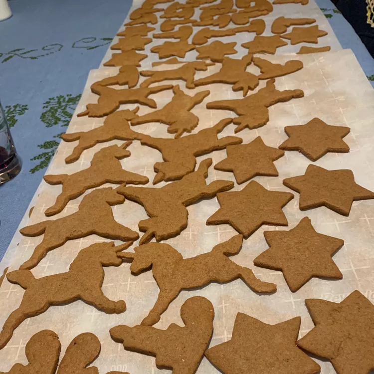

Swedish Gingerbread Cookies (Pepparkakor)

Description
Pepparkakor are thin, crispy, gingerbread cookies that are a Christmas tradition in Sweden. They're usually cut into heart, flower, or star shapes. Store cooled cookies in airtight containers.
Ingredients
- Flour: This pepparkakor recipe starts with all-purpose flour, which gives the cookies structure.
- Baking soda: Baking soda acts as a leavener, which means it helps the cookies rise.
- Spices: These cozy pepparkakor cookies are spiced with cinnamon, cloves, ginger, and cardamom.
- Butter: Two sticks of butter add moisture and richness.
- Sugar: A blend of white and brown sugars gives these cookies a perfectly balanced sweet flavor.
- Egg: A beaten egg adds moisture and acts as a binder, which means it helps hold the dough together.
- Corn syrup: Dark corn syrup adds even more moisture and sweetness. If you'd like a lighter flavor, opt for light corn syrup.
Steps
- Make the dough: Sift the dry ingredients together. Beat the butter and sugars, then add the remaining ingredients. Add the dry mix to the wet mix, then chill the dough.
- Roll and cut the dough: Roll the chilled dough out onto a lightly floured surface. Cut the dough into shapes using cookie cutters.
- Bake the cookies: Bake the cookies in a preheated oven until they're set. Transfer the cookies to a wire rack to cool.